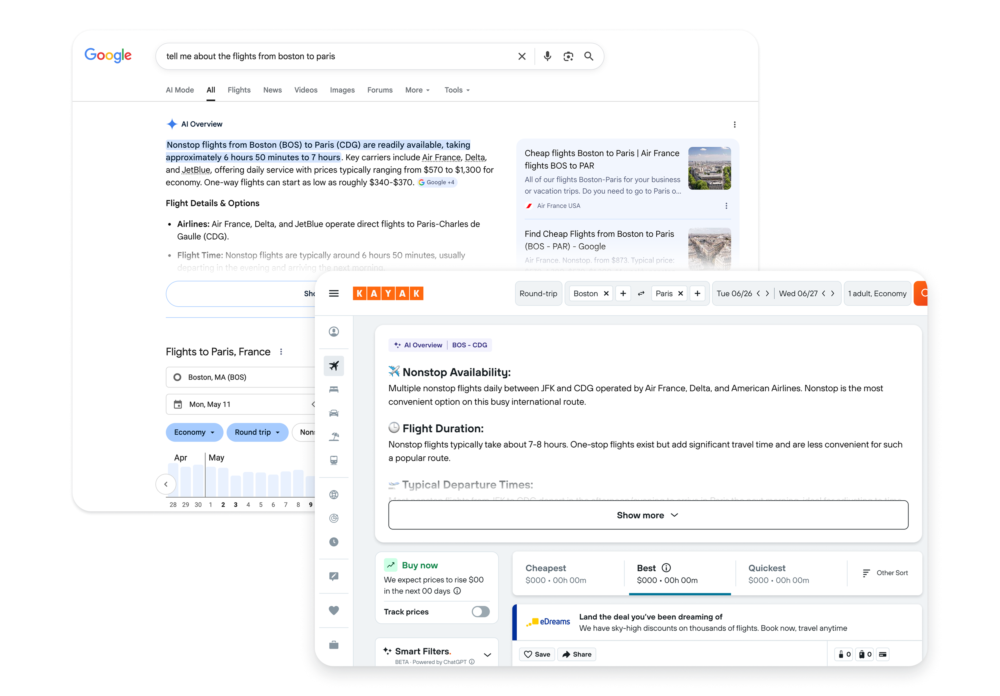
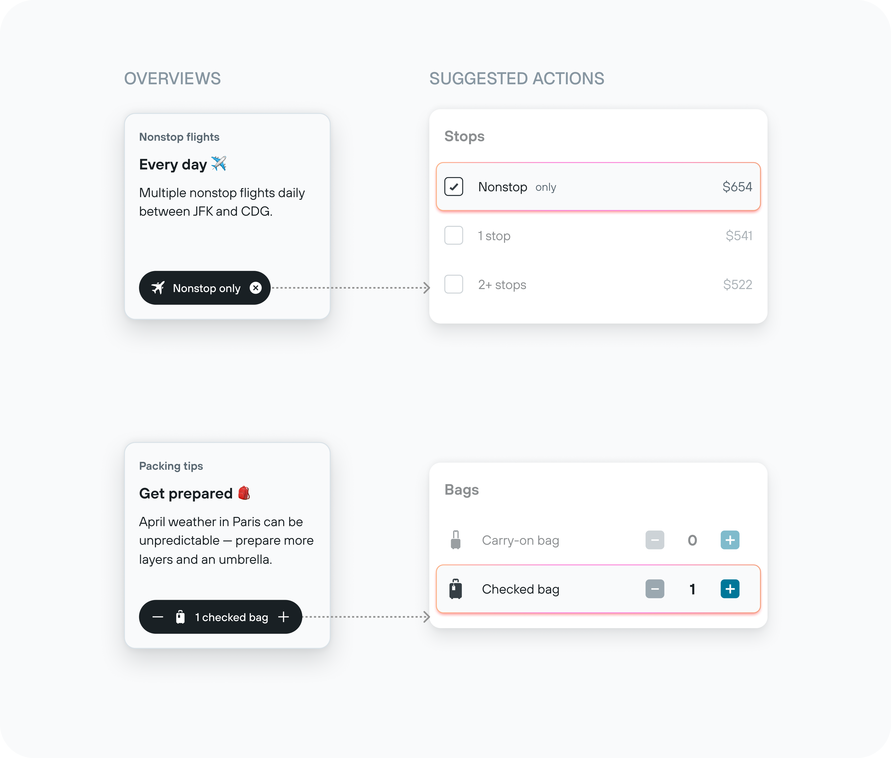
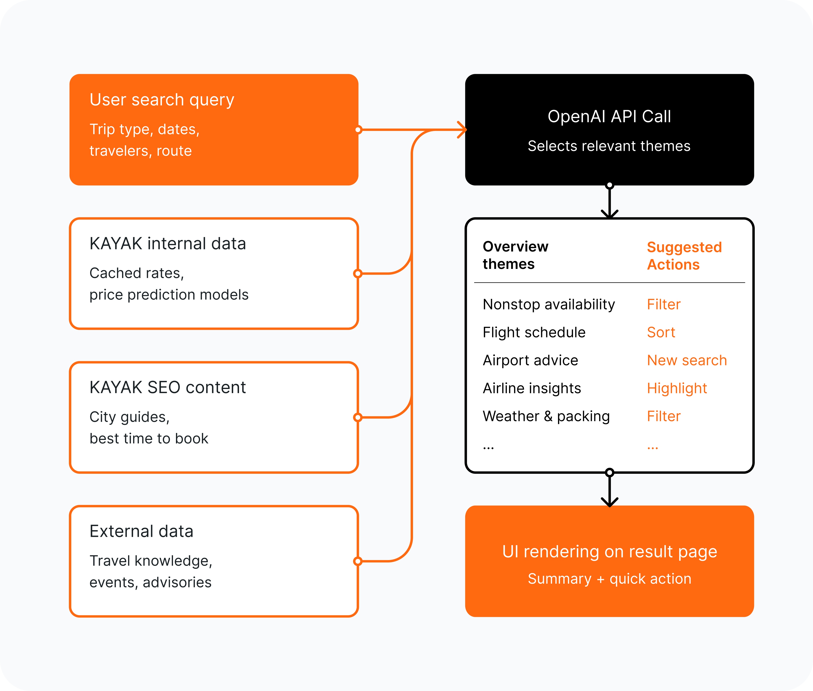

KAYAK · 2025 · AI on flight results
KAYAK Search Overview
KAYAK's flight results overwhelmed users with options and no guidance. I designed an AI overview that orients travelers and routes them to the filters that convert, without burying results or paying for a model call on every search.
- Role
- Senior Product Designer, AI (lead designer)
- Team
- Product, engineering, customer insights
- Timeline
- 2025
- Scope
- AI overview on flight results, cost-aware generation

Why it mattered
The problem
Too many options, not enough clarity
Dense flight lists and deep filter menus made results hard to parse. "Difficult to make sense of" was the third most frequent negative theme in customer feedback, and users who could not decide confidently left for Google Flights. The opportunity was to surface AI guidance, but in a form that protects the primary task of comparing and booking.
The reframe
Guidance that drives the next action
Instead of a markdown summary, the overview renders as horizontal cards in three states: half-faded on load, expanded on opt-in, and collapsed once seen, so results stay in the viewport the whole time. Each insight is paired with a conversion-positive action wired to the highest-engagement filters already on the page.

The core craft
Not every search is worth the tokens
Every overview is an LLM call, so showing one on each search would scale cost linearly with traffic. A traveler comparing a complex international route needs guidance; someone booking a familiar shuttle does not. I designed a two-step architecture: a lightweight scoring layer reads route metadata and predicts whether an overview earns its cost before any generation fires, so quality scales with value rather than volume.

How I worked
-
Designed for cost, not just pixels
A scoring gate decides when an overview is worth generating, treating tokens as a real constraint of the design.
-
Reused what already converts
Quick actions map to the highest-engagement filters on the page, turning a passive content layer into a conversion tool.
-
Kept the user in control
A three-state disclosure lets people choose how much AI they see while the results they came for stay visible.
-
Built a reusable pattern
The card model works for any supplementary content on a high-intent results page, not just this feature.
Strategic considerations
The trade-offs that shaped the work
-
Protect the page's job: comparing and booking
A Google-style text summary would have pushed results below the fold. The three-state card pattern keeps flights in view while still offering guidance.
-
Treat tokens as a design constraint
Generating on every search would scale cost linearly with traffic. A scoring gate fires the model only when an overview is likely worth it, so quality tracks value, not volume.
-
What I didn't build
No new behaviors to learn. Quick actions route to existing high-engagement filters, so the AI surfaces functionality the page already had rather than adding a parallel system.
Collaboration & ownership
From customer pain to measured conversion
- Product
- Engineering
- Customer insights
I owned the feature from the framing of a recurring customer-feedback theme, through the interaction model and the cost-scoring architecture that made it viable to ship at traffic scale, to its measured impact on engagement and filter usage.
Frame
"Difficult to make sense of" ranked third among negative feedback themes; users were leaving for Google Flights.
Reframe
Designed a three-state card pattern that guides without burying results, each insight tied to a converting action.
Make it viable
Added a scoring gate so the model only generates when an overview earns its cost.
Ship & measure
12% feature engagement on the flight results page and +7% filter usage from quick actions.
Outcome
AI that earns its place on the page
Users engaged with the overview, scrolled the cards, and triggered filters they might not have found otherwise: 12% feature engagement on the flight results page and +7% filter usage. Tying AI insights to specific page actions turned a content layer into measurable conversion.